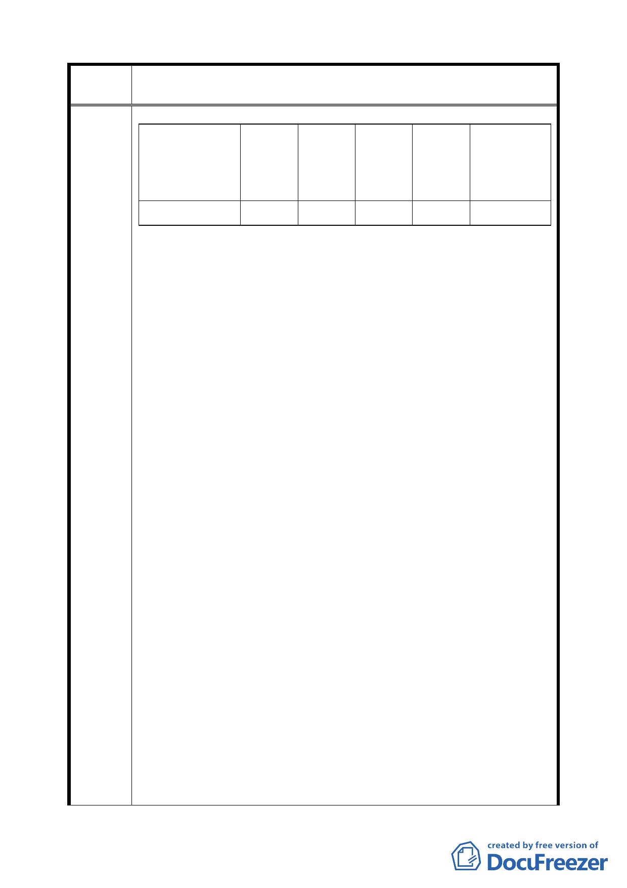

案 名 配合第二代展會中心變更臺北市南港經貿園區特定專用區 C12、
C13 街廓商業區及周邊商業區細部計畫案
由
變更後商
業區
商商商商
原使用分 一 二 三 四
備註
區
住宅區
15% 20% 20% 25%
訂南港經貿園區特定專用區細部計畫案」（以下簡稱「南港經
貿園區細部計畫」）中有關 A 區土地相關規定如下：
(一)本案 C13 街廓第三種住宅區變更為商業區部份，需回饋百分
之四十五之土地或等值樓地板面積或依相關法令以繳交代金
替代。
(二)土地使用強度：
1.建蔽率 60%、容積率 400%。
2.地下層開挖規模（地下室開挖率）70%。
二、然二代展會細部計畫中 A 區土地相關規定修訂如下：
－土地使用強度：
1.建蔽率 45%、容積率 225%。
2.地下層開挖規模（地下室開挖率）依法定建蔽率加 10%。
三、經比較兩案細部計畫之土地使用與都市設計管制要點內容，
明顯發現二代展會細部計畫對我等原應有權益減損甚多，說
明如下：
(一)雖南港經貿園區細部計畫所規定我等土地做商業使用（供
商務設施使用）需回饋百分之四十五之土地，其土地使用強
度為建蔽率 60%、容積率 400%；而以二代展會細部計畫規定，
未來若申請做為（第三種）商業使用，還需依據「修訂臺北
市主要計畫商業區（通盤檢討）計畫案」（如下表）規定回饋
20%土地面積、等值之樓地板面積、繳交代金或提供停車位給
貴府。
(二)兩細部計畫以做商業使用之允建樓地板面積計算比較如
下：
1.南港經貿園區細部計畫
＝ 土地總面積 A × 55% × 400%
＝ 2.20 A
2.二代展會細部計畫
＝ 土地總面積 A × 225% × 80%
＝ 1.80 A
5